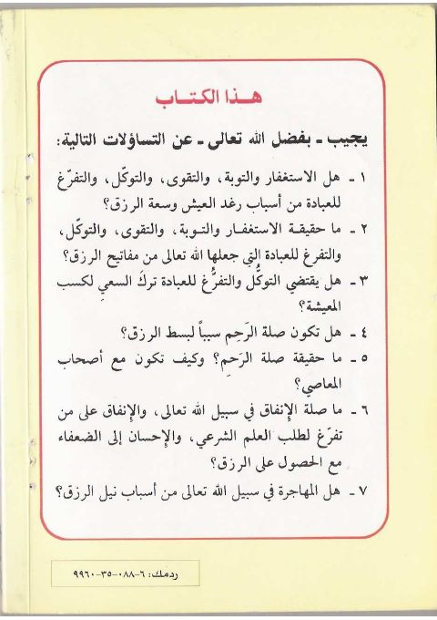

Downloads need an internet connection.
مفاتيح الرزق فى ضوء الكتاب والسنة
Authors: فضل إلهي
Publishers: مؤسسة الريان
**▫️ العنوان: مفاتيح الرزق فى ضوء الكتاب والسنة** ▪️ المؤلف: #فضل_إلهى ▫️ الناشر: #مؤسسة_الريان ▪️ عدد الأجزاء: 1 ▫️ الصفحات: 100 ▪️ نوع الوعاء: #كتاب ▫️ التصنيف الرئيسي: #الثقافة_الإسلامية ۪